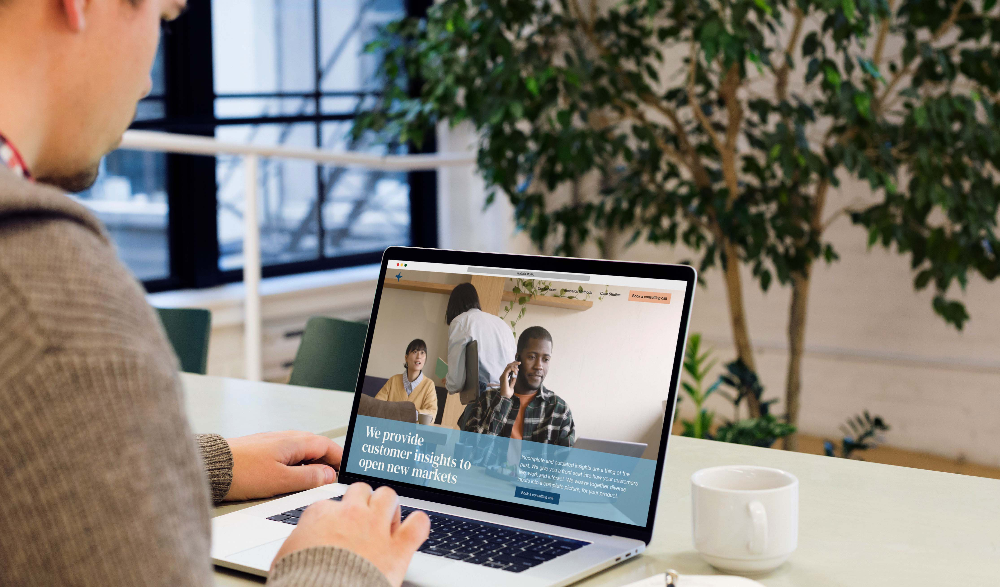
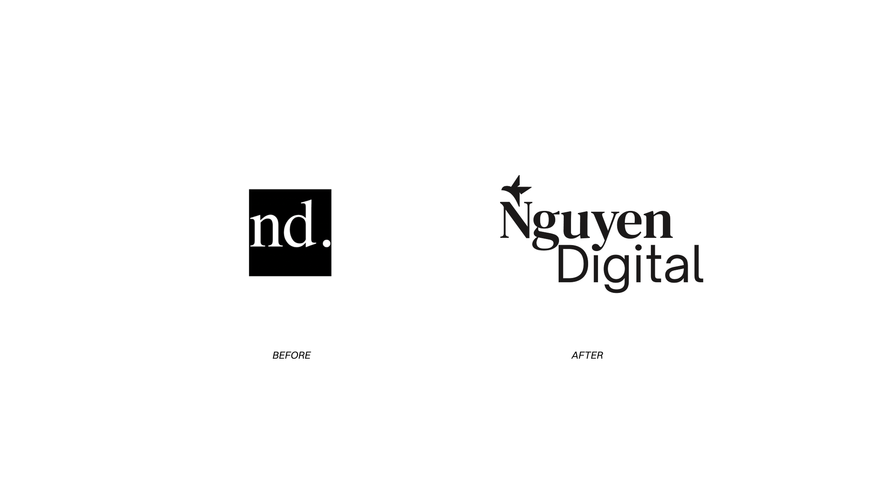
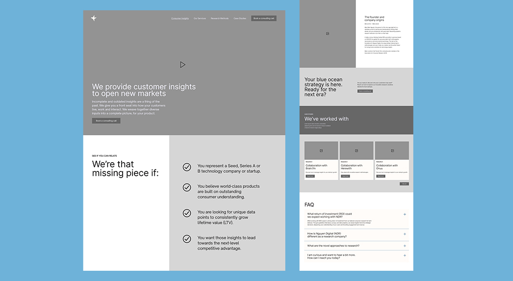
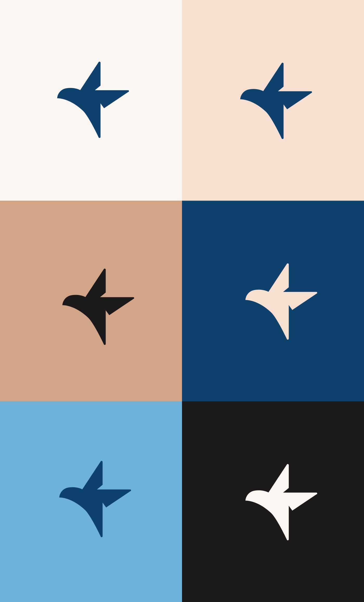
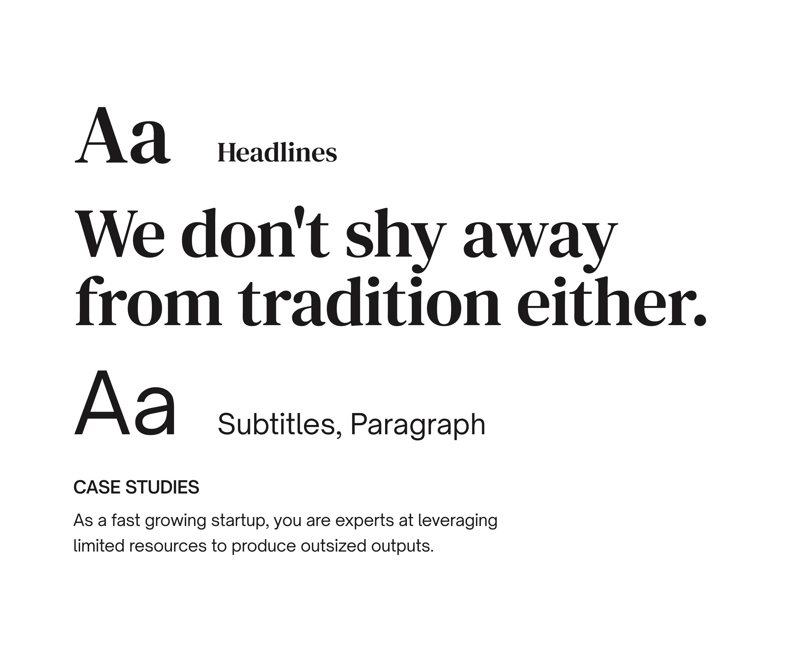
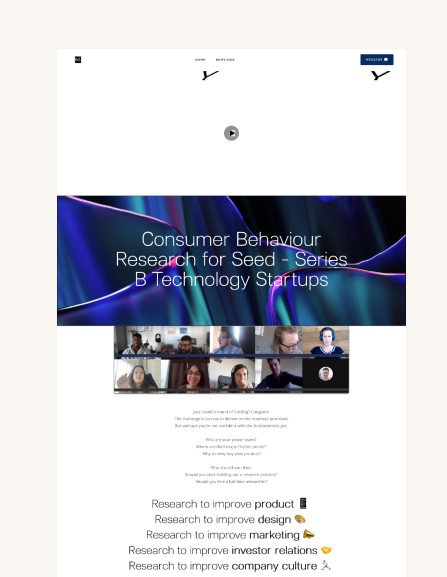
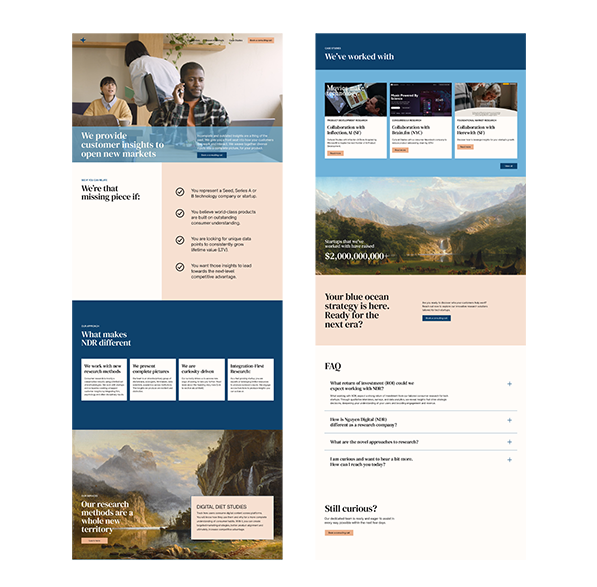
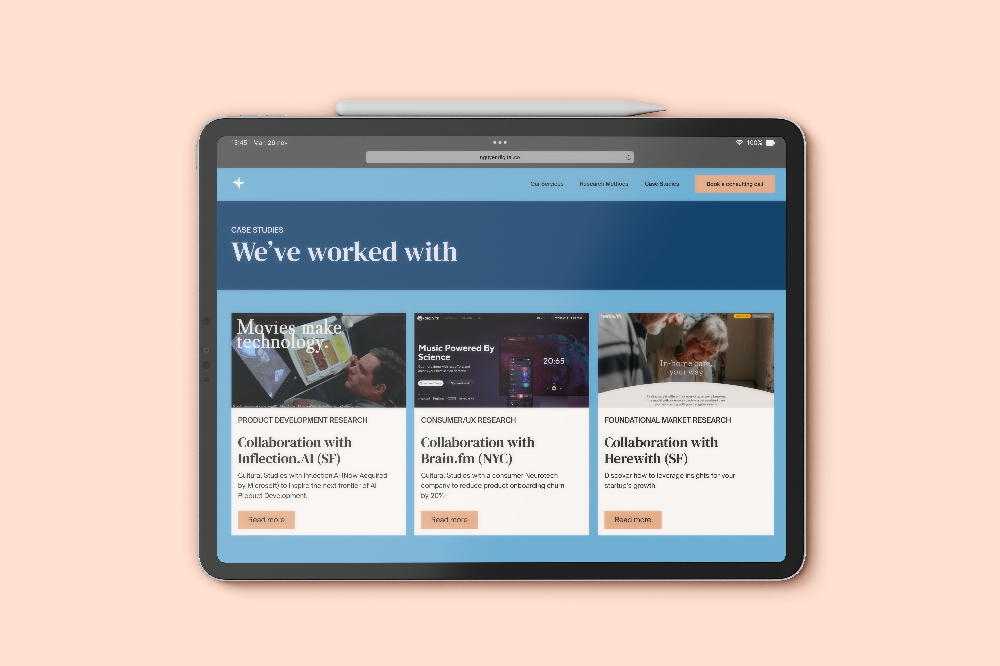
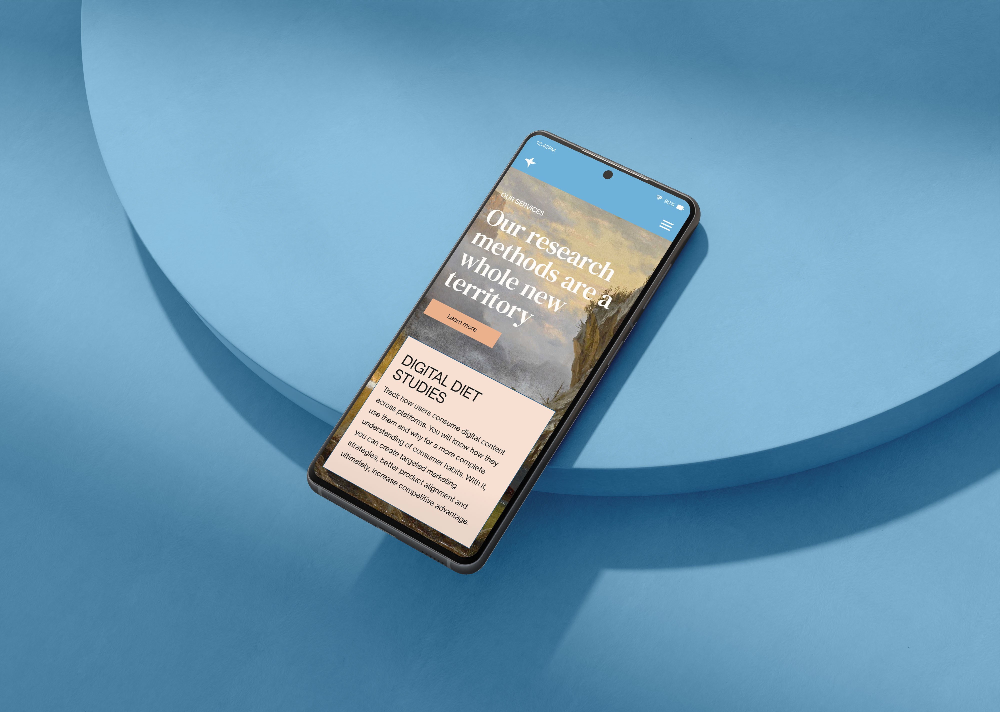

Nguyen Digital
Brand Identity & Landing Page
Introduction
Nguyen Digital is a consumer research company providing transdisciplinary analysis to help clients achieve product-market fit, secure capital, and align with customer needs. They came wanting a brand refresh and landing page update.

Photo Credit: Ruixin Tian
Tools
Illustrator, Photoshop, Figma
Deliverables
Brand Identity System, Landing Page, UI Kit
Keywords
Curious, Expansive
Year
2024
The Challenge
NDR's clients are startups and firms navigating complex market decisions. They needed a brand that felt credible and authoritative without being cold. The identity had to communicate deep expertise while staying open and approachable, reflecting the curiosity at the core of what they do.

The Process
The client came without a fixed visual direction, but a clear feeling: something inspired by sublime nature imagery, in the spirit of Albert Bierstadt: curious, expansive, unhurried. Stylescapes helped translate that feeling into a concrete visual language before any design decisions were made.
From there, a clear brief emerged: classic meets modern, elegant but authoritative. A classic serif typeface anchors the refined, timeless feel they were after. The brand icon was the centrepiece — a bird crafted entirely from negative space, formed by four interconnected Ns from the name Nguyen, arranged in a square. It's the kind of mark that rewards a second look.
Logo Evolution

Wireframes
The Solution
The resulting identity is minimal and considered. A system where every element earns its place. The nature palette, serif typography, and geometric icon work together to position NDR as a research partner that is both rigorous and human.
This project was managed through Wabala Studio, meaning I never interfaced directly with the client. Mockups and brand presentations became the primary communication tool, a constraint that sharpened how clearly I had to articulate design decisions on the page rather than in conversation.




Old Website
New Website
The Reflection
Working without direct client access pushed me to think more carefully about how design is presented, not just made. Every mockup had to speak for itself. It was a valuable lesson in how much of a designer's job is communication, not just craft. A reminder that strong work still needs to be framed well to land the way it should.

